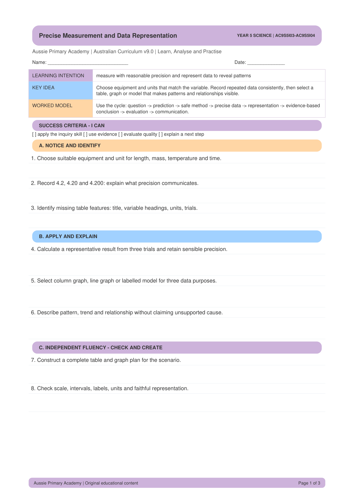

Year 5 · Science · Science Inquiry Skills · Free Printable
Year 5 Precise Measurement and Data Representation Worksheet
A free printable Year 5 Science worksheet on precise measurement and data representation. Students practise accurate methods and clear tables or graphs.

About This Worksheet
This worksheet helps Year 5 students use precise measurement methods and represent data clearly. Students practise careful recording and choose suitable ways to show results.
Aligned to AC9S5I03 and AC9S5I04.
Skills Practised
- Using precise measurement methods
- Recording data carefully
- Representing data in tables or graphs
- Science inquiry skills
Curriculum
Year 5 Science · Australian Curriculum v9.0 · AC9S5I03 · AC9S5I04